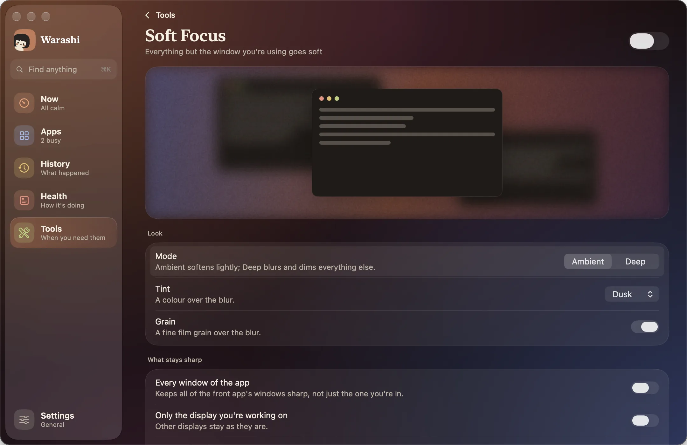

Rozmycie tła wycisza ekran. Każde okno poza tym, w którym pracujesz, łagodnie się rozmywa, więc ostra zostaje tylko Twoja praca. Kliknij inne okno, a stanie się ostre.
- Włącz
Naciśnij Włącz na karcie Rozmycie tła w Narzędziach albo kliknij kartę, żeby otworzyć jej stronę, i użyj przełącznika na górze. Znajdziesz je też pod ⌘K.


- Potrząśnij albo użyj skrótu
Gdy włączysz je pierwszy raz, ⌃⌥⌘F włącza je lub wyłącza w każdej aplikacji. Włącz Potrząśnij wskaźnikiem na stronie Rozmycie tła, żeby robić to samo szybkim potrząśnięciem na boki; przytrzymaj ⇧ i potrząśnij, żeby zerknąć na wszystko, aż puścisz klawisz.
- Pracuj jak zwykle
Kliknij dowolne rozmyte okno, a stanie się ostre. Przesuń je lub zmień rozmiar, a ostry obszar podąży za nim. Menu, Dock i pasek menu zawsze zostają ostre.
Ustawienia
- Tryb: Łagodny lekko zmiękcza, Głęboki rozmywa i przyciemnia całą resztę.
- Odcień kładzie kolor na rozmyciu: Zmierzch, Glina lub Indygo albo Brak. Ziarno dodaje delikatne ziarno filmowe.
- Wszystkie okna aplikacji zostawia ostre wszystkie okna aplikacji na wierzchu, na przykład dokument i jego inspektor.
- Tylko monitor, na którym pracujesz zostawia pozostałe monitory bez zmian.
- Nigdy nie rozmywaj dla to lista aplikacji, przy których rozmycie tła ustępuje: gdy któraś jest na wierzchu, nic nie jest rozmyte.
- Potrząśnij wskaźnikiem jest wyłączone, dopóki go nie włączysz: obserwowanie wskaźnika zużywa trochę energii, gdy się porusza. Czułość określa, jak szerokie musi być potrząśnięcie. Skrót klawiszowy ⌃⌥⌘F można wyłączyć.
Gdy coś nie działa
- Przez chwilę ostre jest złe okno: po przełączeniu okien z klawiatury ostry obszar dogania je w ciągu pół sekundy.
- Potrząśnięcie nic nie robi: włącz Potrząśnij wskaźnikiem na stronie Rozmycie tła, potem spróbuj potrząsnąć szybciej albo zwiększ czułość.
Więcej w sekcji Rozwiązywanie problemów lub napisz na adam@warashi.app.